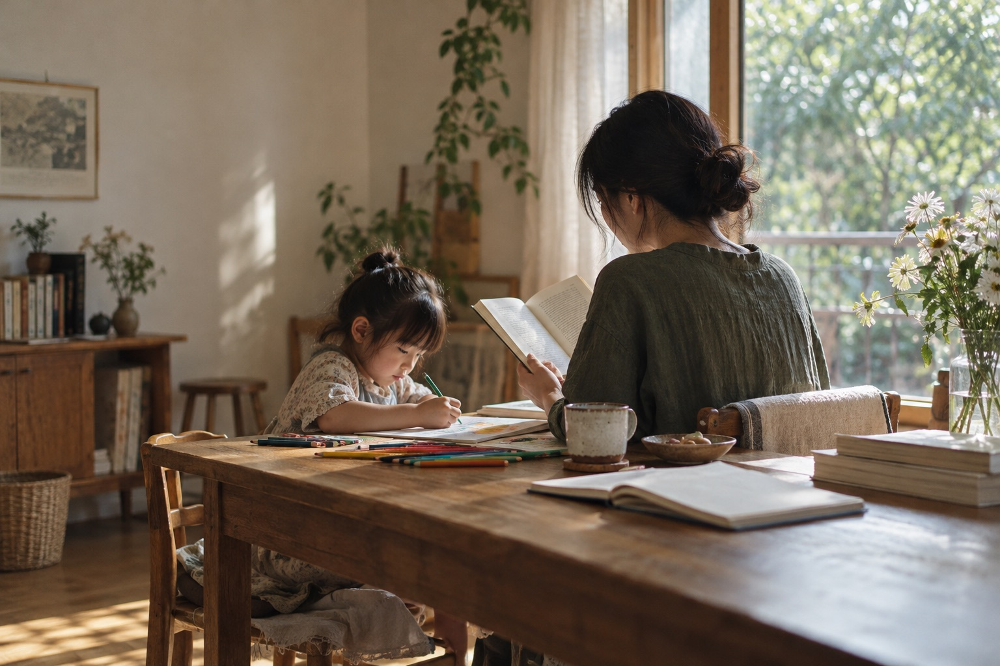
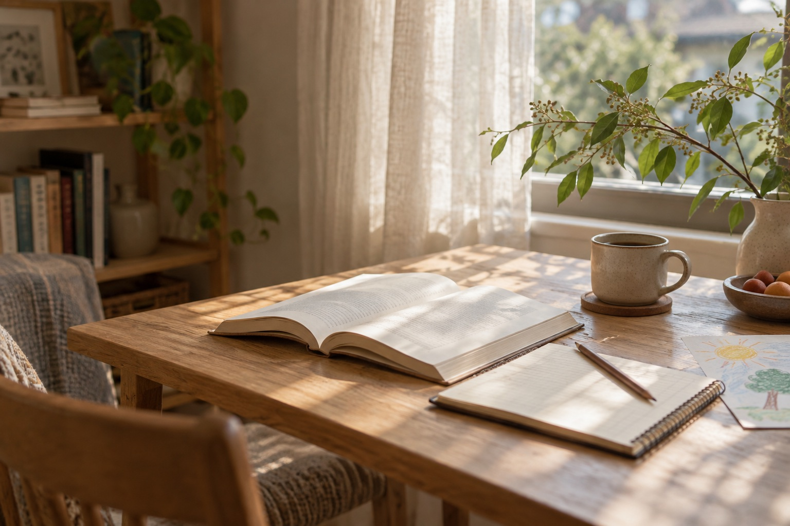

养育现场 · 给照顾者
照顾孩子的间隙，怎样也给自己留十分钟
让自我照顾不再是另一项必须完成的任务。
读这篇文章先留30秒给自己，让我们每天都以
积极向上而非焦虑不安的状态开始。
NOTES FOR A FULLER EVERYDAY LIFE
关于养育、阅读、自我成长和心愿。这里没有标准答案，只有可以一起读、一起想、一起尝试的小小开始。
THE EDITOR'S DESK / 本期精选
真实的日常问题，值得被认真地读一读。

养育现场 · 给照顾者
让自我照顾不再是另一项必须完成的任务。
读这篇文章自我成长 · 日常观察
今天哪件小事，值得我认真做完？
读这篇文章读书与共读 · 一书一问
不急着写漂亮的读后感，让阅读在生活里继续。
读这篇文章READ TOGETHER / 从网页到交流
EXPLORE / 四条内容主线
这些不是必须完成的生活清单，而是可以按你自己的节奏走进来的入口。

TRY THIS TODAY / 今天试试
不必完成得漂亮；愿意试一试，就已经很好。
读到一半想聊天，就从那句话开始聊。
试着问：你今天想从哪一页开始？读两页书、写一句话，或安静喝完一杯咖啡。
试着写：今天我想把十分钟留给＿＿。愿望可以很大，今天的动作可以很小。
试着问：最小的一步是什么？ABOUT THIS PLACE / 关于这里
你好，我是 Grace。我想把这里做成一份常常可以回来的日常读物：遇到养育里的困惑，翻一翻；想读书、想改变一点生活，也能找到一个具体的开始。
我们相信，照顾自己和照顾身边的人，不必是两道选择题。用阅读帮助理解，用小行动让愿望落地，再在真实的交流里彼此支持。
EVERYDAY IDEAS / 日常提案
从空间到物品，再到一件为你而做的东西。这里先谈真实需要、使用感受和选择理由；商品尚未上架，也不会把计划中的产品写成已经体验过的推荐。
关心居住的舒适、秩序和真实预算，不追赶一间样板房。
专题内容准备中从用途、材质、价格和赠予的心意出发，想清楚什么值得留下。
专题内容准备中未来会分享定制珠宝与特别礼物的灵感、材质和制作过程；产品上线时，也会说清价格、周期与售后。
定制服务尚未开放A PLACE FOR YOU / 让交流继续
养育的疑问、成长中的停顿、读完一本书后的新想法，都值得被认真对待。我们正在准备微信群，分享短读与小练习，也给彼此留一处可以说话、可以安静阅读的空间。你不必先变得更好，才值得来到这里。
群二维码、个人微信号和 WhatsApp 号码仍待补充；目前先了解交流方式，暂不能直接加入。
适合想读简短内容、偶尔参与讨论的朋友。
关于共读、合作，或者想问一个具体问题。
给海外的中文读者，也给更习惯 WhatsApp 的你。